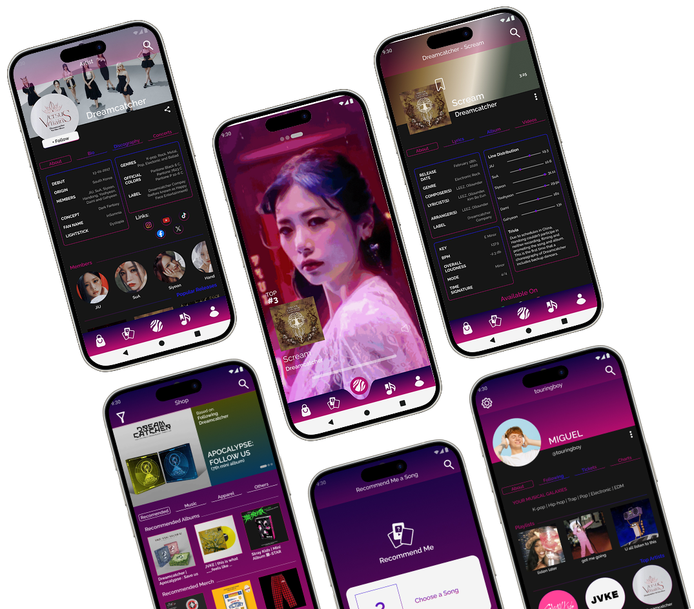

Orbeats - App Prototype
An application created because we felt the need for a place that combines music recommendations and also incorporates relevant information about the artists. Our app aims to simplify the process of finding a new loved song or artist and finding out more about them quickly.
Group Project: Daniela Teodoro | Carina Serra | Frederica Sonso
Methodology: Personas | Storyboards
Wireframes | Flowcharts
Usability tests |
Prototype |
Presentation Video
